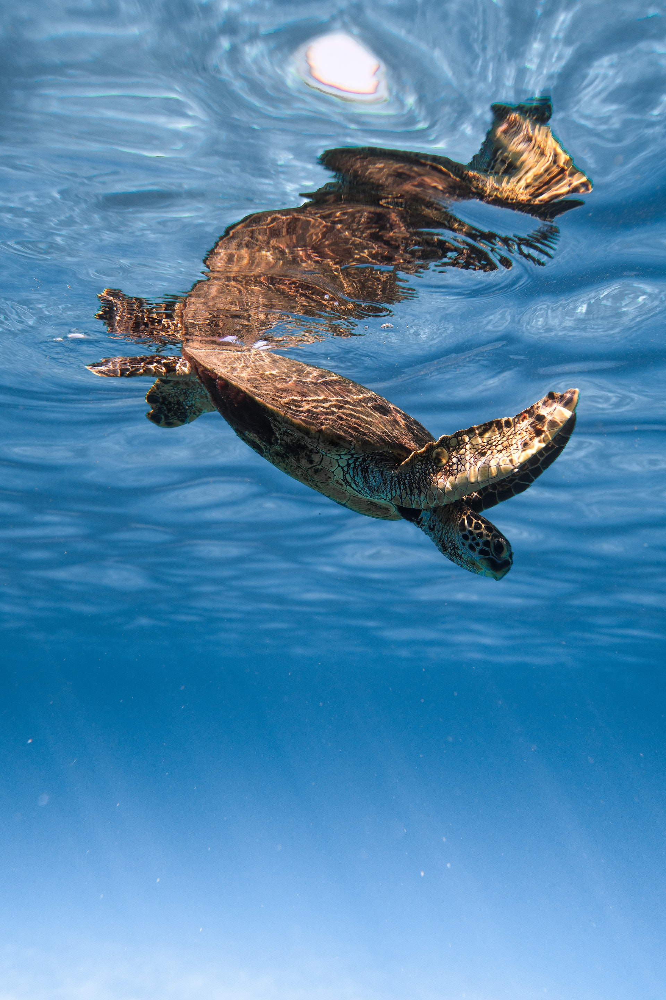
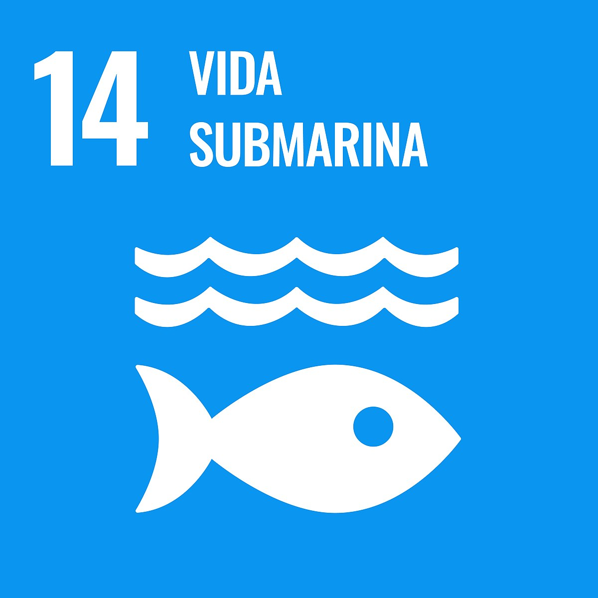

Su objetivo conservar y utilizar sosteniblemente los océanos, los mares y los recursos marinos para el
desarrollo sostenible. Ya que, Los océanos proporcionan recursos naturales fundamentales como alimentos,
medicinas, biocombustibles y otros productos. Contribuyen a la descomposición molecular y a la eliminación de
los desechos y la contaminación, y sus ecosistemas costeros actúan como amortiguadores para reducir los daños
causados por las tormentas. Mantener la salud de los océanos ayuda en los esfuerzos de adaptación al cambio
climático y mitigación de sus efectos. ¿Y has estado en la costa? Las costas son también un gran lugar para el
turismo y las actividades recreativas. Además, las zonas marinas
protegidas contribuyen a la reducción de la pobreza aumentando las capturas de pesca y los ingresos y
mejorando la salud de las personas. También ayudan a mejorar la igualdad de género, ya que las mujeres
realizan gran parte de las labores en la pesca a pequeña escala.
Los niveles de residuos en los océanos, cada vez mayores, están teniendo un gran impacto ambiental y
económico. La basura marina afecta a la diversidad biológica, porque los organismos pueden enredarse en los
detritos o ingerirlos, lo que puede matarlos o hacer imposible su reproducción.
En lo que respecta a los arrecifes de coral, un 20% de los mismos ha sido destruido y no se observan
perspectivas de recuperación. Aproximadamente el 24% de los arrecifes restantes está en peligro inminente de
desaparición por presiones humanas, y un 26% está en riesgo de desaparición a más largo plazo.


©2023 Webcita para el Desarrollo Sostenible